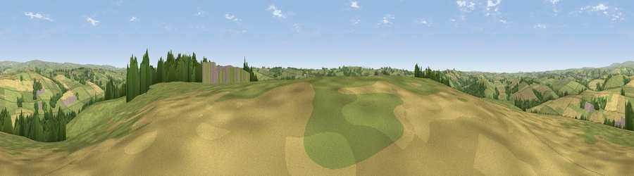

Viewpoint near Mariansleigh
#15577 in England · top 22% of its area beats it · near MariansleighWhere it is
The exact computed spot (SS 73975 22175). Click the marker for map links.
The view, rendered

A 360° render of this exact spot computed from the terrain model, tree cover and land cover — summer colours, afternoon light, calibrated against photographs of famous viewpoints. Real trees, hedges and buildings will differ in detail.
The panorama
Grey silhouette: terrain skyline in each direction (720 bearings, Earth curvature and refraction included). Dashed green: skyline with trees (+15 m) and buildings (+8 m) as obstacles. Blue strip: how far the ground is visible on each bearing.
Where the view opens
Wedge length = distance to the farthest visible ground on that bearing (vegetation-aware). Rings at 10, 25 and 50 km.
What fills the view
67% grassland · 23% cropland · 9% woodland · 1% built-up
Angular shares of the visible panorama (visual magnitude), not map area. Landscape diversity 0.38 (0–1 Shannon).
Key numbers
More beautiful places nearby
The staircase of upgrades: each row has a higher view potential than everything closer. Driving times are estimates from straight-line distance, calibrated against real road routing — check an actual route before setting out.
| Place | Direction | Drive | Score |
|---|---|---|---|
| Viewpoint near Romansleigh | WSW · 3 km | ~7 min | 61.8 |
| Viewpoint near George Nympton | WSW · 5 km | ~10 min | 65.8 |
| Viewpoint near Stags Head | NW · 8 km | ~16 min | 68.1 |
| Viewpoint near Twitchen | NNE · 11 km | ~21 min | 69.1 |
| Yollacombe Hill | WNW · 12 km | ~23 min | 70.2 |
| Viewpoint near Simonsbath | N · 14 km | ~25 min | 73.1 |
| Viewpoint near Brayford | N · 14 km | ~26 min | 74.1 |
| Viewpoint near Challacombe | NNW · 17 km | ~30 min | 75.8 |
50.98514, -3.79681 · source: screening · position refined by local search. Computed location — check access rights before visiting.